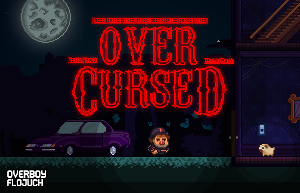

OVERCURSED ★
OVERCURSED is a funny horror point & click game made by Pietro Ferrantelli and Florent Juchniewicz in 48 hours for the asylumjam 2016. (For halloween)
LEFT CLICK to move, take an object or use current object on selected element if possible
RIGHT CLICK to throw current object
"OVERCURSED Inc." is solving people's ghost issues. Well, at least that's what they think you do... Ghost stories are just stories, right ?.... hum... right ?
IF YOU THINK YOU'RE STUCK AFTER THE SCRIPTURES (House 4) : you're not, just turn on and off the light multiple times ;) otherwise you'll miss the key moment of the game